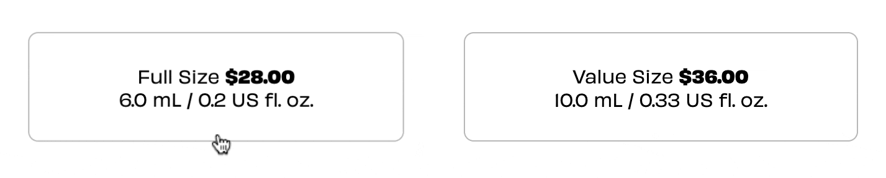

Overview
This project is a microinteraction redesign for Benefit Cosmetics’ lip tint quick-view modal. The goal was to improve clarity and delight across five+ interactions using HTML, CSS, and JavaScript. After exploring foundational patterns in a different Alpha prototype, I shifted to Benefit for the Beta and Final builds, which allowed me to focus on refinement rather than starting over. Over 10+ weeks, I iterated on ease of use, brand consistency, and purposeful animation. The final deliverable includes fully developed microinteractions along with documentation of triggers, rules, feedback, and loops/modes.
Context and Challenge
Project Background
Benefit’s quick-view modal lets shoppers choose a shade and size, then add it to their bag. In the original design, several interactions felt abrupt or unclear, especially when switching shades or confirming an “add” action.
The Problem
Key actions like shade selection, size selection, and add-to-bag didn’t provide enough visual continuity or satisfying feedback. Image swaps were instant, selection states were easy to miss, and add-to-bag confirmation lacked emphasis.
Current Microinteractions
Goals & Objectives
- Ease of Use: Intuitive, single‑select shade/size behaviors.
- Engaging Animations: Purposeful, branded motion and easing.
- Brand Consistency: Align with Benefit’s playful, premium tone.
- Functionality: Fully working prototype with documented rules.
- Iterative Improvement: Alpha → Beta → Final refinements.
Process and Insight
Initial Improvements
I began by breaking the modal into its three core microinteractions, shade selection, size selection, and add-to-bag, because these created the most friction in the original design.
- Shade Selection: Only one shade can be selected at a time; active state includes inner ring that animates in.
- Size Selection: Clear active styling with border color/weight and slight scale; only one size can be selected at a time.
- Add to Bag: Pre‑commit hover affordance, on‑click animated label/characters, and timed reset to support repeated actions.
Select a Shade Button(s)

Select a Size Button(s)
Add to Bag Button

Documentation
Across Beta → Final, I documented each interaction in terms of
- Triggers (what starts the behavior)
- Rules (logic and constraints)
- Feedback (what the user will SEE, HEAR or FEEL)
- Loops/Modes (repeating objects, additional modules, changes to the microinteraction(s) if conditions change, etc)
This ensured consistent behavior and made iteration straightforward as patterns evolved.
Solution
The final implementation combines a total of five primary microinteractions: shade selection, size selection, add‑to‑bag confirmation, view details, and close. Each is defined with clear triggers, rules, and feedback.
Core Microinteractions
- Shade Selection: Single active state with inner ring + animated label text; triggers image cross‑fade.
- Size Selection: Border color + scale distinction; prevents ambiguous multi‑select.
- Add to Bag: Overlay sweep (pre‑commit) → cascade characters (commit) → timed revert for repeated actions.
- View Details: Smooth translate and color transition.
- Close: Clear exit with rotation and scale feedback.

Benetint
Rose-tinted lip & cheek stain
$28.00
4 payments at 0% interest with

Learn more
Select a Shade: Rose
Smooth Transitions
The original interface had abrupt, hard swaps with minimal feedback,
which is not an ideal user experience. To fix that, I added eased
transitions across all of my new microinteractions. For example, the
selected shade label (Rose, Raspberry, Dark Cherry) fades and gently
translates into place using ease, which reinforces the
state change without feeling sudden.
@keyframes shadeFadeIn {
from {
opacity: 0.5;
transform: translateY(4px);
}
to {
opacity: 1;
transform: translateY(0);
}
}
.selected-shade {
position: relative;
display: inline-block;
transition: opacity 250ms ease;
opacity: 1;
}
.selected-shade.is-fading {
animation: shadeFadeIn 300ms ease;
}
Similar easing is applied across hover states, image cross‑fades, and button feedback so changes feel intentional rather than abrupt.
Results & Takeaways
Key Improvements
- Smoother Interactions: Cross-fades and ease make each interaction feel natural instead of jarring.
- Satisfying Feedback: The add-to-bag animation provides clear feedback without feeling over the top.
- Brand Alignment: The motion and hierarchy reflect Benefit’s playful but modern personality.
- Maintainable Patterns: Documenting triggers, rules, and feedback made it easy to maintain and scale each microinteraction.
Overall, this project reinforced the importance of purposeful motion and clear feedback in creating delightful user experiences. Moving forward, I would have liked to user-test these interactions to gather real metrics on speed and usability. By iterating through multiple builds and focusing on functionality, smooth animation, and brand consistency, I was able to deliver a polished final product that meets user needs while aligning with Benefit Cosmetics' identity.